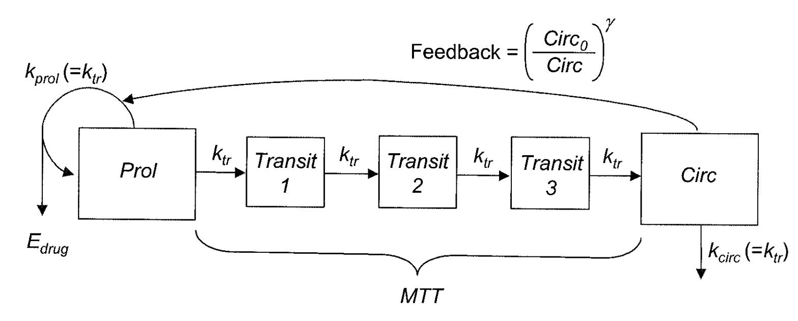

3.1 nlmixr
library(nlmixr)
?nlmixr3.1.1 Rationale
nlmixr estimation routines have their own way of specifying
models. Often the models are specified in ways that are most
intuitive for one estimation routine, but do not make sense for
another estimation routine. Sometimes, legacy estimation
routines like [nlme] have their own syntax that
is outside of the control of the nlmixr package.
The unique syntax of each routine makes the routines themselves
easier to maintain and expand, and allows interfacing with
existing packages that are outside of nlmixr (like
[nlme]). However, a model definition language
that is common between estimation methods, and an output object
that is uniform, will make it easier to switch between estimation
routines and will facilitate interfacing output with external
packages like xpose and other user-written packages.
The nlmixr mini-modeling language (Domain Specific Language) attempts to address this issue
by incorporating a common language. This language is inspired by
both R and NONMEM, since these languages are familiar to many
pharmacometricians.
Initial Estimates and boundaries for population parameters
nlmixr models are contained in a R function with two blocks:
ini and model. This R function can be named
anything, but is not meant to be called directly from R. In fact,
if you try you will likely get an error such as Error: could not find function "ini".
The ini model block
The ini model block is meant to hold the initial estimates
for the model, and the boundaries of the parameters for estimation
routines that support boundaries (note nlmixr’s saem
and [nlme] do not currently support parameter boundaries).
To explain how these initial estimates are specified we will start with an annotated example:
f <- function(){ ## Note the arguments to the function are currently
## ignored by `nlmixr`
ini({
## Initial conditions for population parameters (sometimes
## called theta parameters) are defined by either `<-` or '='
lCl <- 1.6 #log Cl (L/hr)
## Note that simple expressions that evaluate to a number are
## OK for defining initial conditions (like in R)
lVc = log(90) #log V (L)
## Also a comment on a parameter is captured as a parameter label
lKa <- 1 #log Ka (1/hr)
## Bounds may be specified by c(lower, est, upper), like NONMEM:
## Residuals errors are assumed to be population parameters
prop.err <- c(0, 0.2, 1)
})
## The model block will be discussed later
model({})
}As shown in the above examples:
- Simple parameter values are specified as a R-compatible assignment
- Boundaries may be specified by
c(lower, est, upper). - Like NONMEM,
c(lower,est)is equivalent toc(lower,est,Inf) - Also like NONMEM,
c(est)does not specify a lower bound, and is equivalent to specifying the parameter without R’scfunction. - The initial estimates of the between subject variabilities are specified on the variance scale, and in analogy with
NONMEM, the square roots of the diagonal elements correspond to coefficients of variation when used in the exponential IIV implementation. This is true, since this is an approximation. When displaying %CV in the
nlmixrtable, it uses:sqrt(exp(v) - 1) * 100wherev=variance of the Omega formula.
These parameters can be called by almost any R-compatible name. Please note that:
- Residual error estimates should be coded as population estimates (i.e. using an ‘=’ or ‘<-’ statement, not a ‘~’). These are specified on a standard deviation scale.
- Variable names starting with “
_” are not supported. Note that R does not allow variable starting with “_” to be assigned without quoting them. - Variable names starting with “
rx_” or “nlmixr_” are not supported, sinceRxODEandnlmixruse these prefixes internally for certain estimation routines and for calculating residuals. - Variable names are case sensitive, just like they are in R. “
CL” is not the same as “Cl”.
Initial estimates for between-subject error distributions
In mixture models, multivariate normal individual deviations from
the population parameters are estimated (in NONMEM these are
called ETA parameters). Additionally, the
variance/covariance matrix of these deviations are also estimated
(in NONMEM this is the OMEGA matrix). The initial estimates for variance are specified by the ~ operator in nlmixr, which
is typically used in R to denote “modeled by”, and was chosen to
distinguish these estimates from the population and residual error
parameters.
Continuing the prior example, we can annotate the estimates for the between subject error distribution:
f <- function(){
ini({
lCl <- 1.6 #log Cl (L/hr)
lVc = log(90) #log V (L)
lKa <- 1 #log Ka (1/hr)
prop.err <- c(0, 0.2, 1)
## Initial estimate for ka IIV variance
## Labels work for single parameters
eta.ka ~ 0.1 #BSV Ka
## For correlated parameters, you specify the names of each
## correlated parameter separated by a addition operator `+`
## and the left handed side specifies the lower triangular
## matrix initial of the covariance matrix.
eta.cl + eta.vc ~ c(0.1,
0.005, 0.1)
## Note that labels do not currently work for correlated
## parameters. Also do not put comments inside the lower
## triangular matrix as this will currently break the model.
})
## The model block will be discussed later
model({})
}As shown in the above examples:
- Simple variances are specified by the variable name and the
estimate separated by
~. - Correlated parameters are specified by the sum of the variable
labels and then the lower triangular matrix of the covariance is
specified on the left hand side of the equation. This is also
separated by
~. }
Currently the model syntax does not allow comments inside the lower triangular matrix.
Model syntax for ODE-based models
The ini model block
Once the initialization block has been defined, you can define a
model block in terms of the defined variables in the ini block. You can
also mix in RxODE blocks into the model. This section is analogous to NONMEM’s $PK, $PRED, $DES and $ERROR blocks.
The current method of defining an nlmixr model is to specify the
parameters, and then possibly the RxODE lines:
Continuing describing the syntax with an annotated example:
f <- function(){
ini({
lCl <- 1.6 #log Cl (L/hr)
lVc <- log(90) #log Vc (L)
lKA <- 0.1 #log Ka (1/hr)
prop.err <- c(0, 0.2, 1)
eta.Cl ~ 0.1 ## BSV Cl
eta.Vc ~ 0.1 ## BSV Vc
eta.KA ~ 0.1 ## BSV Ka
})
model({
## First parameters are defined in terms of the initial estimates
## parameter names.
Cl <- exp(lCl + eta.Cl)
Vc <- exp(lVc + eta.Vc)
KA <- exp(lKA + eta.KA)
## After the differential equations are defined
kel <- Cl / Vc;
d/dt(depot) = -KA*depot;
d/dt(centr) = KA*depot-kel*centr;
## And the concentration is then calculated
cp = centr / Vc;
## Last, nlmixr is told that the plasma concentration follows
## a proportional error (estimated by the parameter prop.err)
cp ~ prop(prop.err)
})
}A few points to note:
- Parameters are defined before the differential equations. Currently, defining the differential equations directly in terms of the population parameters is not supported.
- The differential equations, parameters and error terms are in a single block, instead of multiple sections.
- State names, calculated variables cannot start with either “
rx_” or “nlmixr_” since these are reserved terms for internal use in some estimation routines. - Errors are specified using
~. Currently you can use eitheradd(parameter)for additive error,prop(parameter)for proportional error oradd(parameter1) + prop(parameter2)for combined additive and proportional error. You can also specifynorm(parameter)for the additive error, since it follows a normal distribution. - Some algorithms, like
saem, require parameters in terms ofPop.Parameter + Individual.Deviation.Parameter + Covariate*Covariate.Parameter. The order of these parameters do not matter. The approach is similar to NONMEM’s mu-referencing. - The type of parameter (population parameter estimate, or individual parameter deviation) in the model is determined by the initial block; Covariates used in the model are missing in the
iniblock. These variables need to be present in the modeling dataset for the model to run.
Model Syntax for solved PK systems
Solved PK systems are currently supported by nlmixr with the
linCmt() pseudo-function. An annotated example of a solved
system is below:
f <- function(){
ini({
lCl <- 1.6 #log Cl (L/hr)
lVc <- log(90) #log Vc (L)
lKA <- 0.1 #log Ka (1/hr)
prop.err <- c(0, 0.2, 1)
eta.Cl ~ 0.1 ## BSV Cl
eta.Vc ~ 0.1 ## BSV Vc
eta.KA ~ 0.1 ## BSV Ka
})
model({
Cl <- exp(lCl + eta.Cl)
Vc <- exp(lVc + eta.Vc)
KA <- exp(lKA + eta.KA)
## Instead of specifying the ODEs, you can use
## the linCmt() function to use the solved system.
##
## This function determines the type of PK solved system
## to use by the parameters that are defined. In this case
## it knows that this is a one-compartment model with first-order
## absorption.
linCmt() ~ prop(prop.err)
})
}A few things to keep in mind:
- Currently the solved systems support either oral dosing, IV dosing or IV infusion dosing, but does not allow mixing the dosing types.
- While RxODE allows mixing of solved systems and ODEs, this has not
been implemented in
nlmixryet. - The solved systems implemented are the one-, two- and three-compartment
models with or without first-order absorption. Each of the models support a
lag time with a
tlagparameter (although currentlytlagwill cause the CWRES/OBJF calculation to fail). - The
linCmt()function figures out the model from the parameter names.nlmixrcurrently knows about numbered volumes, Vc/Vp, clearances in terms of both CL and Q/CLD. Additionally,nlmixrknows about elimination micro-constants (ie k12). Mixing of parameters and microconstants for is currently not supported.
Checking model syntax
After specifying the model syntax you can check that nlmixr is
interpreting it correctly by using the nlmixr function on
it.
Using the above function we can get:
> nlmixr(f)
## 1-compartment model with first-order absorption in terms of Cl
## Initialization:
################################################################################
Fixed Effects ($theta):
lCl lVc lKA
1.60000 4.49981 0.10000
Omega ($omega):
[,1] [,2] [,3]
[1,] 0.1 0.0 0.0
[2,] 0.0 0.1 0.0
[3,] 0.0 0.0 0.1
## Model:
################################################################################
Cl <- exp(lCl + eta.Cl)
Vc <- exp(lVc + eta.Vc)
KA <- exp(lKA + eta.KA)
## Instead of specifying the ODEs, you can use
## the linCmt() function to use the solved system.
##
## This function determines the type of PK solved system
## to use by the parameters that are defined. In this case
## it knows that this is a one-compartment model with first-order
## absorption.
linCmt() ~ prop(prop.err)In general this gives you information about the model (what type of solved system/RxODE), initial estimates as well as the code for the model block.
Using the model syntax for estimating a model
Once the model function has been created, you can use it to estimate the parameters for a model given a dataset.
This dataset has to have RxODE compatible event IDs. Both
Monolix and NONMEM use a different dataset description. You may
convert these datasets to RxODE-compatible datasets with the
nmDataConvert function. Note that steady state
doses are not supported by RxODE, and therefore not supported by
the conversion function.
As an example, we can use a simulated rich 1-compartment oral PK dataset.
d <- Oral_1CPT
d <- d[,names(d) != "SS"];
d <- nmDataConvert(d);Once the data has been converted to the appropriate format, you
can use the nlmixr function to run the appropriate code.
The method to execute the model is:
fit <- nlmixr(model.function, rxode.dataset, est="est",control=estControl(options))Currently nlme and saem are implemented. For example, to run the
above model with saem, we could have the following:
> f <- function(){
ini({
lCl <- 1.6 #log Cl (L/hr)
lVc <- log(90) #log Vc (L)
lKA <- 0.1 #log Ka (1/hr)
prop.err <- c(0, 0.2, 1)
eta.Cl ~ 0.1 ## BSV Cl
eta.Vc ~ 0.1 ## BSV Vc
eta.KA ~ 0.1 ## BSV Ka
})
model({
## First parameters are defined in terms of the initial estimates
## parameter names.
Cl <- exp(lCl + eta.Cl)
Vc <- exp(lVc + eta.Vc)
KA <- exp(lKA + eta.KA)
## After the differential equations are defined
kel <- Cl / Vc;
d/dt(depot) = -KA*depot;
d/dt(centr) = KA*depot-kel*centr;
## And the concentration is then calculated
cp = centr / Vc;
## Last, nlmixr is told that the plasma concentration follows
## a proportional error (estimated by the parameter prop.err)
cp ~ prop(prop.err)
})
}
> fit.s <- nlmixr(f,d,est="saem",control=saemControl(n.burn=50,n.em=100,print=50));
Compiling RxODE differential equations...done.
c:/Rtools/mingw_64/bin/g++ -I"c:/R/R-34~1.1/include" -DNDEBUG -I"d:/Compiler/gcc-4.9.3/local330/include" -Ic:/nlmixr/inst/include -Ic:/R/R-34~1.1/library/STANHE~1/include -Ic:/R/R-34~1.1/library/Rcpp/include -Ic:/R/R-34~1.1/library/RCPPAR~1/include -Ic:/R/R-34~1.1/library/RCPPEI~1/include -Ic:/R/R-34~1.1/library/BH/include -O2 -Wall -mtune=core2 -c saem3090757b4bd1x64.cpp -o saem3090757b4bd1x64.o
In file included from c:/R/R-34~1.1/library/RCPPAR~1/include/armadillo:52:0,
from c:/R/R-34~1.1/library/RCPPAR~1/include/RcppArmadilloForward.h:46,
from c:/R/R-34~1.1/library/RCPPAR~1/include/RcppArmadillo.h:31,
from saem3090757b4bd1x64.cpp:1:
c:/R/R-34~1.1/library/RCPPAR~1/include/armadillo_bits/compiler_setup.hpp:474:96: note: #pragma message: WARNING: use of OpenMP disabled; this compiler doesn't support OpenMP 3.0+
#pragma message ("WARNING: use of OpenMP disabled; this compiler doesn't support OpenMP 3.0+")
^
c:/Rtools/mingw_64/bin/g++ -shared -s -static-libgcc -o saem3090757b4bd1x64.dll tmp.def saem3090757b4bd1x64.o c:/nlmixr/R/rx_855815def56a50f0e7a80e48811d947c_x64.dll -Lc:/R/R-34~1.1/bin/x64 -lRblas -Lc:/R/R-34~1.1/bin/x64 -lRlapack -lgfortran -lm -lquadmath -Ld:/Compiler/gcc-4.9.3/local330/lib/x64 -Ld:/Compiler/gcc-4.9.3/local330/lib -Lc:/R/R-34~1.1/bin/x64 -lR
done.
1: 1.8174 4.6328 0.0553 0.0950 0.0950 0.0950 0.6357
50: 1.3900 4.2039 0.0001 0.0679 0.0784 0.1082 0.1992
100: 1.3894 4.2054 0.0107 0.0686 0.0777 0.1111 0.1981
150: 1.3885 4.2041 0.0089 0.0683 0.0778 0.1117 0.1980
Using sympy via SnakeCharmR
## Calculate ETA-based prediction and error derivatives:
Calculate Jacobian...................done.
Calculate sensitivities.......
done.
## Calculate d(f)/d(eta)
## ...
## done
## ...
## done
The model-based sensitivities have been calculated.
It will be cached for future runs.
Calculating Table Variables...
doneThe options for saem are controlled by saemControl.
You may wish to make sure the minimization is complete in the case
of saem. You can do that with traceplot, which shows the
iteration history with burn-in and EM phases. In
this case, the burn-in seems reasonable; you may wish to increase
the number of iterations in the EM phase of the estimation.
Overall it is probably a semi-reasonable solution. (xpose.nlmixr’s prm_vs_iteration() can also do this.)
nlmixr output objects
In addition to unifying the modeling language sent to each of the estimation routines, the outputs currently have a unified structure.
You can see the fit object by typing the object name:
> fit.s
nlmixr SAEM fit (ODE)
OBJF AIC BIC Log-likelihood
62335.96 62349.96 62397.88 -31167.98
Time (sec; $time):
saem setup FOCEi Evaulate covariance table
elapsed 379.32 2.9 1.71 0 19.11
Parameters ($par.fixed):
Parameter Estimate SE CV Untransformed (95%CI)
lCl log Cl (L/hr) 1.39 0.0240 1.7% 4.01 (3.82, 4.20)
lVc log Vc (L) 4.20 0.0256 0.6% 67.0 (63.7, 70.4)
lKA log Ka (1/hr) 0.00890 0.0307 344.9% 1.01 (0.950, 1.07)
prop.err 0.198 19.8%
Omega ($omega):
eta.Cl eta.Vc eta.KA
eta.Cl 0.06833621 0.00000000 0.000000
eta.Vc 0.00000000 0.07783316 0.000000
eta.KA 0.00000000 0.00000000 0.111673
Fit Data (object is a modified data.frame):
ID TIME DV IPRED PRED IRES RES IWRES
1: 1 0.25 204.8 194.859810 198.21076 9.94018953 6.589244 0.25766777
2: 1 0.50 310.6 338.006073 349.28827 -27.40607290 -38.688274 -0.40955290
3: 1 0.75 389.2 442.467750 463.78410 -53.26775045 -74.584098 -0.60809361
---
6945: 120 264.00 11.3 13.840800 70.58248 -2.54080024 -59.282475 -0.92725039
6946: 120 276.00 3.9 4.444197 34.41018 -0.54419655 -30.510177 -0.61851500
6947: 120 288.00 1.4 1.427006 16.77557 -0.02700637 -15.375569 -0.09559342
WRES CWRES CPRED CRES eta.Cl eta.Vc
1: 0.07395107 0.07349997 198.41341 6.38659 0.09153143 0.1366395
2: -0.26081216 -0.27717947 349.82730 -39.22730 0.09153143 0.1366395
3: -0.39860485 -0.42988445 464.55651 -75.35651 0.09153143 0.1366395
---
6945: -0.77916115 -1.34050999 41.10189 -29.80189 0.32007359 -0.1381479
6946: -0.65906613 -1.28359979 15.51100 -11.61100 0.32007359 -0.1381479
6947: -0.56746681 -1.22839732 5.72332 -4.32332 0.32007359 -0.1381479
eta.KA
1: 0.1369685
2: 0.1369685
3: 0.1369685
---
6945: -0.2381078
6946: -0.2381078
6947: -0.2381078This example shows the standard printout of an nlmixr fit object. The elements of the fit are:
- The type of fit (
nlme,saem, etc) Metrics of goodness of fit (
AIC,BIC, andlogLik).- To align the comparison between methods, the FOCEi likelihood objective is calculated regardless of the method used and used for goodness of fit metrics.
- This FOCEi likelihood has been compared to NONMEM’s objective function and gives the same values (based on the data in Wang 2007 (2007))
- Note that FOCEi is used to calculate the objective function for a
saemfit. - Even though the objective functions are calculated in the same manner, caution should be used when comparing fits from different estimation routines.
The next item is the timing of each of the steps of the fit.
- These can be accessed by (
fit.s$time). - As a mnemonic, the access for this item is shown in the printout. This is true for almost all of the other items in the printout.
After the timing of the fit, the parameter estimates are displayed (can be accessed by
fit.s$par.fixed
- While the items are rounded for R printing, each estimate without rounding is still accessible by the
$syntax. For example, the$Untransformedgives the untransformed parameter values. - The Untransformed parameter takes log-space parameters and back-transforms them to normal parameters. Not the CIs are listed on the back-transformed parameter space.
Proportional Errors are converted to %CV on the untransformed space
Omega block (accessed by
fit.s$omega)
A table of fit data is also supplied. Please note:
- An
nlmixrfit object is actually a data frame. Saving it as a Rdata object and then loading it withoutnlmixrwill just show the data by itself. The additional fit information is still present, butnlmixrmust be loaded in order to see it. - Special access to fit information (like the
$omega) needsnlmixrto extract the information.
If you use the $ to access information, the order of precedence is:
- Fit data from the overall data.frame
- Information about the parsed
nlmixrmodel (via$uif) - Parameter history if available (via
$par.histand$par.hist.stacked) - Fixed effects table (via
$par.fixed) - Individual differences from the typical population parameters (via
$eta) - Fit information from the list of information generated during the post-hoc residual calculation.
- Fit information from the environment where the post-hoc residual were calculated
- Fit information about how the data and options interacted with the specified model (such as estimation options or if the solved system is for an infusion or an IV bolus).
While the printout may display the data as a data.table object or tbl
object, the data is NOT any of these objects, but rather a derived data frame.
- Since the object **is*}** a data.frame, you can treat it like one.
In addition to the above properties of the fit object, there are a few additional that may be helpful for the modeler:
$thetagives the fixed effects parameter estimates (in NONMEM thethetas). This can also be accessed innlmefunction. Note that the residual variability is treated as a fixed effect parameter and is included in this list.$etagives the random effects parameter estimates, or in NONMEM theetas. This can also be accessed in using therandom.effectsfunction.
3.1.2 Some examples
3.1.2.1 A two-compartment PK model
Now let’s have a look at some examples to demonstrate the syntax. Here’s a relatively straightforward two-compartmental PK model with covariate effects.
my2CptModel <- function() {
ini({
tka <- log(1.14)
tcl <- log(0.0190)
tv2 <- log(2.12)
tv3 <- log(20.4)
tq <- log(0.383)
wteff <- 0.35
sexeff <- -0.2
eta.ka ~ 1
eta.cl ~ 1
eta.v2 ~ 1
eta.v3 ~ 1
eta.q ~ 1
prop.err <- 0.075
})
model({
ka <- exp(tka + eta.ka)
cl <- exp(tcl + wteff*lWT + eta.cl)
v2 <- exp(tv2 + sexeff*SEX + eta.v2)
v3 <- exp(tv3 + eta.v3)
q <- exp(tq + eta.q)
d/dt(depot) = -ka * depot
d/dt(center) = ka * depot - cl / v2 * center + q/v3 * periph - q/v2 * center
d/dt(periph) = q/v2 * center - q/v3 * periph
cp = center / v2
cp ~ prop(prop.err)
})
}
my2CptFit <- nlmixr(my2CptModel, dat, est="saem")We will fit this model using SAEM, so we have included random effects on every model parameter. We have also chosen to use ODEs rather than linCmt().
Notice how covariates have been included. lWT is pre-processed body weight (log(WT/70)) and SEX is a binary variable equal to 0 (male) or 1 (female).
Let’s inspect the results…
print(my2CptFit)## -- nlmixr SAEM fit (ODE); OBJF calculated from FOCEi approximation ----------------------------------------------------------------------------------------------------------------------------------------------------
## OBJF AIC BIC Log-likelihood Condition Number
## 3178.892 3204.892 3255.411 -1589.446 650007.1
##Objective function (OBJF), Akaike information criterion (AIC), Bayesian information criterion (BIC), the log-likelihood of the model given the data, and the condition number are provided at the top of the output block. This more, judging from the condition number (the ratio between the largest and smallest eigenvalues), may be over-parameterized. For this SAEM model, the OBJF has been calculated using the FOCEi method.
## -- Time (sec; $time): ---------------------------------------------------------------------------------------------------------------------------
## saem setup Likelihood Calculation covariance table
## elapsed 547.67 23.31 0.72 0 1.81
##Next, we have a block showing benchmarks for the run. This fit took just under 10 minutes in total.
## -- Parameters ($par.fixed): ---------------------------------------------------------------------------------------------------------------------
## Estimate SE %RSE Back-transformed(95%CI) BSV(CV%)
## tka 0.136 0.0502 36.8 1.15 (1.04, 1.26) 29.9%
## tcl -2.08 0.0360 1.73 0.125 (0.116, 0.134) 22.5%
## tv2 0.700 0.0330 4.72 2.01 (1.89, 2.15) 23.0%
## tv3 1.69 0.00155 0.0919 5.42 (5.41, 5.44) 18.0%
## tq -1.22 0.000407 0.0332 0.294 (0.294, 0.294) 30.2%
## wteff 0.765 0.0379 4.96 2.15 (1.99, 2.31)
## sexeff -0.215 0.0493 23.0 0.807 (0.732, 0.889)
## prop.err 0.0726 7.26%
## Shrink(SD)%
## tka 13.6%
## tcl 1.78%
## tv2 10.1%
## tv3 20.8%
## tq 6.82%
## wteff
## sexeff
## prop.err 24.6%
##
## No correlations in between subject variability (BSV) matrix
## Full BSV covariance ($omega) or correlation ($omega.R; diagonals=SDs)
## Distribution stats (mean/skewness/kurtosis/p-value) available in $shrink
##The next block provides parameter estimates and associated precisions, between subject variability (BSV) where appropriate, and exponentiated versions of the parameter estimates together with 95% confidence intervals (“back-transformed”). (nlmixr assumes that all parameters are log-transformed. Sometimes this is not the case, as illustrated here for wteff and sexeff.) Shrinkages are also supplied. The fit object has properties that can be interrogated:
my2CptFit$par.fixedprovides the fixed-effect parameter estimatesmy2CptFit$omegaprovides the variance-covariance matrix for BSV ($OMEGA)my2CptFit$omega.Rprovides the correlation matrixmy2CptFit$shrinkprovides shrinkages and other statistical descriptors of the parameter distributions
## -- Fit Data (object is a modified data.frame): --------------------------------------------------------------------------------------------------
## # A tibble: 360 x 28
## ID TIME DV SEX WT PRED RES WRES IPRED IRES IWRES
## * <fct> <dbl> <dbl> <dbl> <dbl> <dbl> <dbl> <dbl> <dbl> <dbl> <dbl>
## 1 1 0.302 190. 0. 52. 169. 21.4 0.375 191. -0.578 -0.0417
## 2 1 2.91 296. 0. 52. 389. -93.1 -1.35 329. -32.5 -1.36
## 3 1 3.14 312. 0. 52. 379. -66.7 -1.01 314. -2.27 -0.0996
## # ... with 357 more rows, and 17 more variables: CPRED <dbl>, CRES <dbl>,
## # CWRES <dbl>, eta.ka <dbl>, eta.cl <dbl>, eta.v2 <dbl>, eta.v3 <dbl>,
## # eta.q <dbl>, depot <dbl>, center <dbl>, periph <dbl>, ka <dbl>,
## # cl <dbl>, v2 <dbl>, v3 <dbl>, q <dbl>, cp <dbl>Finally, a summary of the underlying tibble (a modified data.frame) is provided - this contains all parameter estimates and diagnostics.
3.1.2.2 Physiologically-based PK
Building on the first simple example, we can be more ambitious, and try a full PBPK model. This one was published for mavoglurant (Wendling et al. 2016).

pbpk <- function(){
ini({
lKbBR = 1.1
lKbMU = 0.3
lKbAD = 2
lCLint = 7.6
lKbBO = 0.03
lKbRB = 0.3
eta.LClint ~ 4
add.err <- 1
prop.err <- 10
})
model({
KbBR = exp(lKbBR)
KbMU = exp(lKbMU)
KbAD = exp(lKbAD)
CLint= exp(lCLint + eta.LClint)
KbBO = exp(lKbBO)
KbRB = exp(lKbRB)
## Regional blood flows
CO = (187.00*WT^0.81)*60/1000; # Cardiac output (L/h) from White et al (1968)
QHT = 4.0 *CO/100;
QBR = 12.0*CO/100;
QMU = 17.0*CO/100;
QAD = 5.0 *CO/100;
QSK = 5.0 *CO/100;
QSP = 3.0 *CO/100;
QPA = 1.0 *CO/100;
QLI = 25.5*CO/100;
QST = 1.0 *CO/100;
QGU = 14.0*CO/100;
QHA = QLI - (QSP + QPA + QST + QGU); # Hepatic artery blood flow
QBO = 5.0 *CO/100;
QKI = 19.0*CO/100;
QRB = CO - (QHT + QBR + QMU + QAD + QSK + QLI + QBO + QKI);
QLU = QHT + QBR + QMU + QAD + QSK + QLI + QBO + QKI + QRB;
## Organs' volumes = organs' weights / organs' density
VLU = (0.76 *WT/100)/1.051;
VHT = (0.47 *WT/100)/1.030;
VBR = (2.00 *WT/100)/1.036;
VMU = (40.00*WT/100)/1.041;
VAD = (21.42*WT/100)/0.916;
VSK = (3.71 *WT/100)/1.116;
VSP = (0.26 *WT/100)/1.054;
VPA = (0.14 *WT/100)/1.045;
VLI = (2.57 *WT/100)/1.040;
VST = (0.21 *WT/100)/1.050;
VGU = (1.44 *WT/100)/1.043;
VBO = (14.29*WT/100)/1.990;
VKI = (0.44 *WT/100)/1.050;
VAB = (2.81 *WT/100)/1.040;
VVB = (5.62 *WT/100)/1.040;
VRB = (3.86 *WT/100)/1.040;
## Fixed parameters
BP = 0.61; # Blood:plasma partition coefficient
fup = 0.028; # Fraction unbound in plasma
fub = fup/BP; # Fraction unbound in blood
KbLU = exp(0.8334);
KbHT = exp(1.1205);
KbSK = exp(-.5238);
KbSP = exp(0.3224);
KbPA = exp(0.3224);
KbLI = exp(1.7604);
KbST = exp(0.3224);
KbGU = exp(1.2026);
KbKI = exp(1.3171);
##-----------------------------------------
S15 = VVB*BP/1000;
C15 = Venous_Blood/S15
##-----------------------------------------
d/dt(Lungs) = QLU*(Venous_Blood/VVB - Lungs/KbLU/VLU);
d/dt(Heart) = QHT*(Arterial_Blood/VAB - Heart/KbHT/VHT);
d/dt(Brain) = QBR*(Arterial_Blood/VAB - Brain/KbBR/VBR);
d/dt(Muscles) = QMU*(Arterial_Blood/VAB - Muscles/KbMU/VMU);
d/dt(Adipose) = QAD*(Arterial_Blood/VAB - Adipose/KbAD/VAD);
d/dt(Skin) = QSK*(Arterial_Blood/VAB - Skin/KbSK/VSK);
d/dt(Spleen) = QSP*(Arterial_Blood/VAB - Spleen/KbSP/VSP);
d/dt(Pancreas) = QPA*(Arterial_Blood/VAB - Pancreas/KbPA/VPA);
d/dt(Liver) = QHA*Arterial_Blood/VAB + QSP*Spleen/KbSP/VSP + QPA*Pancreas/KbPA/VPA + QST*Stomach/KbST/VST + QGU*Gut/KbGU/VGU - CLint*fub*Liver/KbLI/VLI - QLI*Liver/KbLI/VLI;
d/dt(Stomach) = QST*(Arterial_Blood/VAB - Stomach/KbST/VST);
d/dt(Gut) = QGU*(Arterial_Blood/VAB - Gut/KbGU/VGU);
d/dt(Bones) = QBO*(Arterial_Blood/VAB - Bones/KbBO/VBO);
d/dt(Kidneys) = QKI*(Arterial_Blood/VAB - Kidneys/KbKI/VKI);
d/dt(Arterial_Blood) = QLU*(Lungs/KbLU/VLU - Arterial_Blood/VAB);
d/dt(Venous_Blood) = QHT*Heart/KbHT/VHT + QBR*Brain/KbBR/VBR + QMU*Muscles/KbMU/VMU + QAD*Adipose/KbAD/VAD + QSK*Skin/KbSK/VSK + QLI*Liver/KbLI/VLI + QBO*Bones/KbBO/VBO + QKI*Kidneys/KbKI/VKI + QRB*Rest_of_Body/KbRB/VRB - QLU*Venous_Blood/VVB;
d/dt(Rest_of_Body) = QRB*(Arterial_Blood/VAB - Rest_of_Body/KbRB/VRB);
C15 ~ add(add.err) + prop(prop.err)
})
}
This model estimates 6 structural parameters, 1 random effect, and includes combined additive and proportional residual error. The dependent variable, C15, is venous blood concentration.
3.1.2.3 Nonlinear PK
Complex models can be estimated as well. In the example below, a target-mediated drug disposition PK model for nimotuzumab is illustrated (Rodríguez-Vera et al. 2015).

myPKPDModel <- function() {
ini({
tcl <- log(0.001)
tv1 <- log(1.45)
tQ <- log(0.004)
tv2 <- log(44)
tkss <- log(12)
tkint <- log(0.3)
tksyn <- log(1)
tkdeg <- log(7)
eta.cl ~ 2
eta.v1 ~ 2
eta.kss ~ 2
add.err <- 10
})
model({
cl <- exp(tcl + eta.cl)
v1 <- exp(tv1 + eta.v1)
Q <- exp(tQ)
v2 <- exp(tv2)
kss <- exp(tkss + eta.kss)
kint <- exp(tkint)
ksyn <- exp(tksyn)
kdeg <- exp(tkdeg)
k <- cl/v1
k12 <- Q/v1
k21 <- Q/v2
eff(0) <- ksyn/kdeg # initialize compartment
# Calculate concentration
conc = 0.5*(central/v1 - eff - kss) + 0.5*sqrt((central/v1 - eff - kss)**2 + 4*kss*central/v1)
d/dt(central) = -(k+k12)*conc*v1+k21*peripheral-kint*eff*conc*v1/(kss+conc)
d/dt(peripheral) = k12*conc*v1-k21*peripheral ##Free Drug second compartment amount
d/dt(eff) = ksyn - kdeg*eff - (kint-kdeg)*conc*eff/(kss+conc)
IPRED = log(conc)
IPRED ~ add(add.err)
})
}3.1.2.4 PKPD models
Finally, we present an implementation of the Friberg myelosuppression model (Friberg et al. 2002). nlmixr is capable of handling almost any kind of model that can be implemented using ODEs.

wbc <- function() {
ini({
log_CIRC0 <- log(7.21)
log_MTT <- log(124)
log_SLOPU <- log(28.9)
log_GAMMA <- log(0.239)
eta.CIRC0 ~ .1
eta.MTT ~ .03
eta.SLOPU ~ .2
prop.err <- 10
})
model({
CIRC0 = exp(log_CIRC0 + eta.CIRC0)
MTT = exp(log_MTT + eta.MTT)
SLOPU = exp(log_SLOPU + eta.SLOPU)
GAMMA = exp(log_GAMMA)
# PK parameters from input dataset
CL = CLI;
V1 = V1I;
V2 = V2I;
Q = 204;
CONC = A_centr/V1;
# PD parameters
NN = 3;
KTR = (NN + 1)/MTT;
EDRUG = 1 - SLOPU * CONC;
FDBK = (CIRC0 / A_circ)^GAMMA;
CIRC = A_circ;
A_prol(0) = CIRC0;
A_tr1(0) = CIRC0;
A_tr2(0) = CIRC0;
A_tr3(0) = CIRC0;
A_circ(0) = CIRC0;
d/dt(A_centr) = A_periph * Q/V2 - A_centr * (CL/V1 + Q/V1);
d/dt(A_periph) = A_centr * Q/V1 - A_periph * Q/V2;
d/dt(A_prol) = KTR * A_prol * EDRUG * FDBK - KTR * A_prol;
d/dt(A_tr1) = KTR * A_prol - KTR * A_tr1;
d/dt(A_tr2) = KTR * A_tr1 - KTR * A_tr2;
d/dt(A_tr3) = KTR * A_tr2 - KTR * A_tr3;
d/dt(A_circ) = KTR * A_tr3 - KTR * A_circ;
CIRC ~ prop(prop.err)
})
}
References
Friberg, Lena E., Anja Henningsson, Hugo Maas, Laurent Nguyen, and Mats O Karlsson. 2002. “Model of chemotherapy-induced myelosuppression with parameter consistency across drugs.” Journal of Clinical Oncology 20 (24): 4713–21. https://doi.org/10.1200/JCO.2002.02.140.
Rodríguez-Vera, Leyanis, Mayra Ramos-Suzarte, Eduardo Fernández-Sánchez, Jorge Luis Soriano, Concepción Peraire Guitart, Gilberto Castañeda Hernández, Carlos O. Jacobo-Cabral, Niurys De Castro Suárez, and Helena Colom Codina. 2015. “Semimechanistic model to characterize nonlinear pharmacokinetics of nimotuzumab in patients with advanced breast cancer.” Journal of Clinical Pharmacology 55 (8): 888–98. https://doi.org/10.1002/jcph.496.
Wang, Yaning. 2007. “Derivation of various NONMEM estimation methods.” Journal of Pharmacokinetics and Pharmacodynamics 34 (5): 575–93. https://doi.org/10.1007/s10928-007-9060-6.
Wendling, Thierry, Nikolaos Tsamandouras, Swati Dumitras, Etienne Pigeolet, Kayode Ogungbenro, and Leon Aarons. 2016. “Reduction of a Whole-Body Physiologically Based Pharmacokinetic Model to Stabilise the Bayesian Analysis of Clinical Data.” The AAPS Journal 18 (1): 196–209. https://doi.org/10.1208/s12248-015-9840-7.